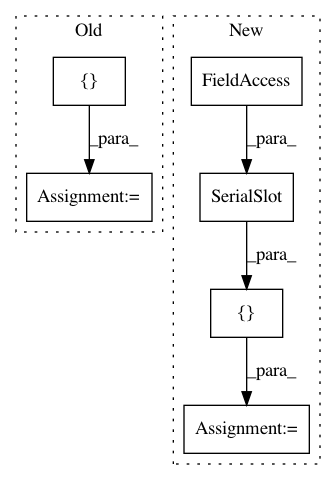

faa13436e13076bd54fcb9590e49d77c696b9d50,ilastik/applets/tracking/structured/structuredTrackingSerializer.py,StructuredTrackingSerializer,__init__,#StructuredTrackingSerializer#Any#Any#,94
Before Change
class StructuredTrackingSerializer(AppletSerializer):
def __init__(self, topLevelOperator, projectFileGroupName):
slots = [ SerialDictSlot(topLevelOperator.Parameters, selfdepends=True),
SerialHdf5BlockSlot(topLevelOperator.OutputHdf5,
topLevelOperator.InputHdf5,
topLevelOperator.CleanBlocks,
name="CachedOutput"),
SerialDictSlot(topLevelOperator.EventsVector, transform=str, selfdepends=True),
SerialDictSlot(topLevelOperator.FilteredLabels, transform=str, selfdepends=True),
SerialPickledValueSlot(topLevelOperator.ExportSettings),
SerialSlot(topLevelOperator.DivisionWeight),
SerialSlot(topLevelOperator.DetectionWeight),
SerialSlot(topLevelOperator.TransitionWeight),
SerialSlot(topLevelOperator.AppearanceWeight),
SerialSlot(topLevelOperator.DisappearanceWeight),
SerialSlot(topLevelOperator.MaxNumObjOut)
]
if "MergerOutput" in topLevelOperator.outputs:
slots.append(SerialHdf5BlockSlot(topLevelOperator.MergerOutputHdf5,
topLevelOperator.MergerInputHdf5,
After Change
class StructuredTrackingSerializer(AppletSerializer):
def __init__(self, topLevelOperator, projectFileGroupName):
slots = [ SerialDictSlot(topLevelOperator.Parameters, selfdepends=True),
SerialDictSlot(topLevelOperator.EventsVector, transform=str, selfdepends=True),
SerialDictSlot(topLevelOperator.FilteredLabels, transform=str, selfdepends=True),
SerialPickledValueSlot(topLevelOperator.ExportSettings),
SerialSlot(topLevelOperator.DivisionWeight),
SerialSlot(topLevelOperator.DetectionWeight),
SerialSlot(topLevelOperator.TransitionWeight),
SerialSlot(topLevelOperator.AppearanceWeight),
SerialSlot(topLevelOperator.DisappearanceWeight),
SerialSlot(topLevelOperator.MaxNumObjOut)
]
if "CoordinateMap" in topLevelOperator.outputs:
slots.append(SerialPickleableSlot(topLevelOperator.CoordinateMap, 1, pgmlink.TimestepIdCoordinateMap()))
In pattern: SUPERPATTERN
Frequency: 3
Non-data size: 6
Instances
Project Name: ilastik/ilastik
Commit Name: faa13436e13076bd54fcb9590e49d77c696b9d50
Time: 2016-11-29
Author: janez.ales@iwr.uni-heidelberg.de
File Name: ilastik/applets/tracking/structured/structuredTrackingSerializer.py
Class Name: StructuredTrackingSerializer
Method Name: __init__
Project Name: ilastik/ilastik
Commit Name: c494d03e2cd1003c2bacde429647797dcd0749e6
Time: 2016-03-28
Author: bergs@janelia.hhmi.org
File Name: ilastik/applets/wsdt/wsdtSerializer.py
Class Name: WsdtSerializer
Method Name: __init__
Project Name: ilastik/ilastik
Commit Name: 0f5aba06d3ab87d8c07500aaa1807228295d4361
Time: 2013-03-22
Author: martin.schiegg@iwr.uni-heidelberg.de
File Name: ilastik/applets/opticalTranslation/opticalTranslationSerializer.py
Class Name: OpticalTranslationSerializer
Method Name: __init__